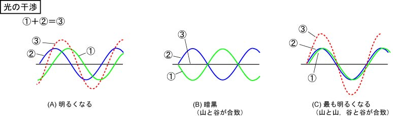
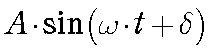
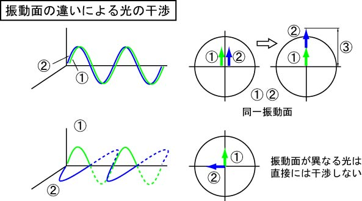
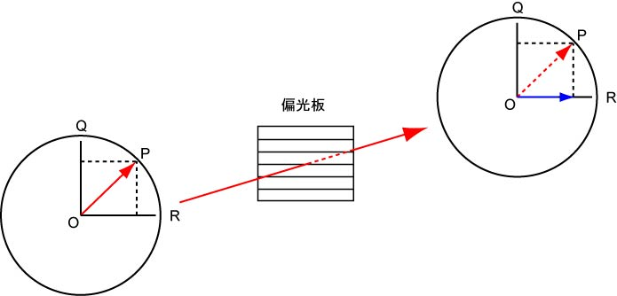
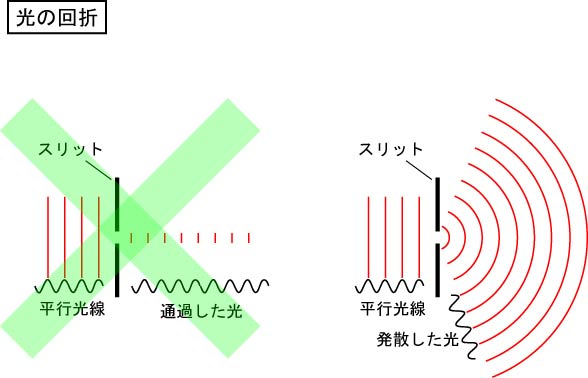

・光の干渉
同じ波面を持つ光はお互いに干渉します．

青い線で示した光と，緑で示した光が足したり，引いたりするのです．
左の図ではある程度，位相，のずれがある二つの光が足し合わさった様子を示します（赤の点線）．
この状態では，元の光より若干明るくなります．
中央の図では，ちょうど二つの光の山と谷が合致したため，結果として光が消えてしまいます．
この状態を音波に置き換えると音が消えることになります，これがノイズキャンセリングヘッドフォンに使われていますね．
右の図は二つの光の位相がそろった場合，山と山，谷と谷が合致した状態ですね．
これが最も明るくなります．
ここででてた，位相，というもの．
式で表すと，

の，δ，のことを示します．
しかし，当分この位相というものは出てきません．
位相差，微分干渉顕微鏡で出てきます．
・振動面の違いによる光の干渉
この干渉は，振動面に影響を受けます．

同じ振動面なら，干渉が起こりますが，直交する光同士は干渉しません．
上の図は，①と②の光の振動面が同じ状態．
下の図は，①と②の光の振動面が直交している状態．
・光の分割と合成
先ほどは，光に振動面があり，直交する振動面の光は干渉しない，と説明しましたが，では直交じゃなく，斜めだったらどうなるのでしょう？
それが，光の分割と合成なのです．
上の図にありますように，
ＯＰを振幅とする光 → ＯＱとＯＲを振幅とする2つの光に分割
ＯＲとＯＱを合成 → ＯＰを振幅とする光に合成
することができるのです．
つまり，このＯＰ（赤）の光を水平な偏光板を通すと，

となり，青で示したＯＲの光のみが通過することになります．
ここで重要なのが，元の光，ＯＰ（赤）に比べて，偏光板を通過した光，ＯＲ（青）の矢印が短くなっている，ということ．
つまり，振幅が小さくなっている，と言うことなので，光は弱まっているのです．
・光の回折
次は光の回折．
これはあっさりと．
光があるスリットを通ると，その間隔だけの光が通過するのではなく，スリットから同心円のように光が伝搬します．
下の図の左は間違いです．

次は，光の伝搬について．